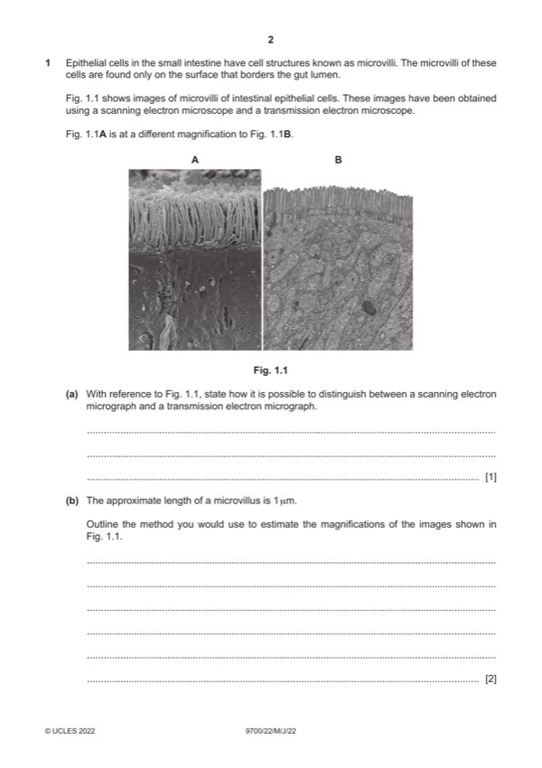

Question 1

Original paper page 2
Part 1(a) — solution
I ref. to resolution 1
any one from:
Fig. 1.1A is scanning (EM), qualified ;
e.g. shows, surface / contour / 3-D, views
shows (only the), the outer / external, view (of microvilli)
idea of good focus with different depths
does not have stated feature of TEM (see mp2)
Fig. 1.1B is transmission (EM), qualified ;
e.g. showing, 2D / flat, views (of, microvilli / mitochondria)
image in one plane
showing section through, mitochondria / microvilli / cell I thin
shows, internal view of cell / contents of cell / AW
does not have stated feature of SEM (see mp1)
scanning (EM) stated plus feature
and ; if Fig. 1.1, A / B not identified
transmission (EM) stated plus feature
Mark points
- Include the ideas shown in the solution above.
Part 1(b) — solution
any two from: max 1 if stating to measure one of the sides of the figure 2
(for each image) measure a number of microvilli and calculate a mean ;
same units for actual and measured images / example given ;
e.g. if microvillus measurement is in mm
convert, microvillus measured length to m / actual length to mm
R if extra detail given is incorrect e.g. divide by 1000 for mm to m
divide, microvillus / image, length by, actual length / AW / 1(m) ;
A idea that value for, microvillus / image, length is the magnification
Mark points
- Include the ideas shown in the solution above.
Part 1(c)(i) — solution
any two from: 2
(movement of substances) against concentration gradient / from low(er) to high(er) concentration ;
(protein has) binding site(s) ;
specific ; A description e.g. shape complementary to shape of substance
can be in context of protein or binding site
ref. to (binding causes protein), conformational change / change of shape ;
2022 Page 7 of 21
9700/22 Cambridge International AS & A Level – Mark Scheme May/June 2022
Mark points
- Include the ideas shown in the solution above.
Part 1(c)(ii) — solution
any two from: 2
Mark points
- Include the ideas shown in the solution above.
Part 1 — solution
glucose is moving against a (concentration) gradient ; AW e.g. low to high
Mark points
- Include the ideas shown in the solution above.
Part 1(c)(iii) — solution
increases / larger / large, surface area (over which glucose can enter cell per unit time) ; A increases / higher / high, SA:V 2
idea of (so) more, transport / carrier / cotransport, proteins
A more cotransporters
or
more proteins, located in membrane / AW ; R pump proteins
A idea of more space / places, where proteins can transport glucose
2022 Page 8 of 21
9700/22 Cambridge International AS & A Level – Mark Scheme May/June 2022
Mark points
- Include the ideas shown in the solution above.
Part 1(d) — solution
any four from: 4
suggestion max 3 explanation
Mark points
- Include the ideas shown in the solution above.
Part 1 — solution
to replace, old / dead / damaged / injured, cells 6 idea of function in context of mp1 or 2 or 3 ;
or e.g. repair allows tissues to function
to, repair / replace, damaged tissue ;
specialisation / differentiation, allows, cells / tissue, to
I repair cells function
I replace old tissues
genetically identical so cells can function as a tissue
Mark points
- Include the ideas shown in the solution above.
Part 1 — solution
person A, has cholera O1 / is infected with V. cholerae O1
and person B, does not have cholera ;
A ref. to person A testing positive for cholera O1 and person B testing negative to cholera
Mark points
- Include the ideas shown in the solution above.
Part 1 — solution
both, are (nucleotide sequences that are) transcribed / form part of the primary transcript ;
Mark points
- Include the ideas shown in the solution above.
Part 1 — solution
acetazolamide / inhibitor, binds / attaches / AW, to, allosteric site / site other than active site ; R alternative active site
Mark points
- Include the ideas shown in the solution above.